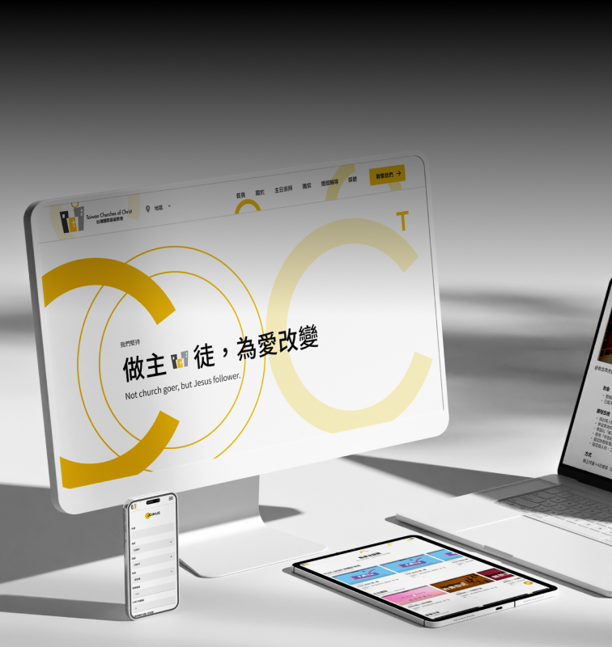

01Problem/Challenge Solution |
|
|---|---|
01 |
Legacy Visuals Damaging Credibility
Crafted a completely new, modern brand visual identity to project an energetic, welcoming, and reliable image.
|
02 |
Content Decay & Maintenance Burden
Restructured to "Evergreen Content"—highlighting core values rather than fleeting events to prevent the site from becoming outdated.
|
03 |
High-Friction Communication
Integrated a seamless LINE Official Account (OA) gateway directly into the UI, offering a "soft-landing" for inquiries.
|


1
/Problems
Metrics
UX Planning
Styles
Iterations
Handoff & Design System
Outcomes